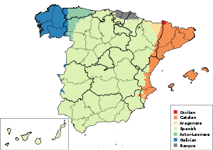

Највећи градови

Имиграција
Шпанија је после САД земља која прима највећи проценат имиграната на свету. Године 2005, у Шпанију је дошло 38,6% од укупног броја имиграната у Европску унију. Имигранти су у највећем броју из ибероамеричких земаља, затим из других земаља ЕУ источне Европе и Магреба. Велики део економског напретка у последњим годинама и обезбеђење пензионих фондова за надолазеће године се може захвалити имигрантима, с обзиром да је шпанско становништво све старије.
Статистике
Од 44.708.964 укупног броја становника Шпаније, 4.144.166 су странци, или 9,3% становништва, према студији шпанског Националног института за статистику [46] која је закључена 1. јануара 2006. Најбројнији странци у Шпанији су Мароканци (536.012), затим Еквадорци (461.310), Румуни (407.159) и Колумбијци (265.141). Од земаља Европске уније, најбројнији су Британци (274.723) и Немци (150.000), сконцентрисани углавном на југу и истоку Шпаније, конкретно, Аликанте и Малага.
Срби у Шпанији
Према последњим статистичким подацима од 1. јануара 2006. године, у Шпанији је живело 3.474 Срба, од којих 1.862 мушкараца и 1.612 жена. Највише има Срба између 30-34 године старости (укупно 593 од којих 351 мушкарац и 242 жене. Следе Срби између 25-29 година, којих има укупно 470, од којих 248 мушкараца и 222 жене. На трећем месту су Срби између 35-39 година старости, којих има укупно 447 — 272 мушкарца и 175 жена.
Језици
Шпански језик или кастиљански је званични језик шпанске државе.
Остали језици (и дијалекти) који се говоре у Шпанији су:
Каталонски језик — коофицијелни језик аутономних заједница Каталоније,
Валенсије (валенсијански дијалект) и Балеарска острва (мајоркански дијалект)
Баскијски језик — коофицијелни језик аутономне покрајине Баскије
Галицијски језик — коофицијелни језик аутономне покрајине Галиција
Астурлеонски језик — нема статус коофицијелног језика
Арагонски језик — нема статус коофицијелног језика
Етнолингвистичка мапа Шпаније